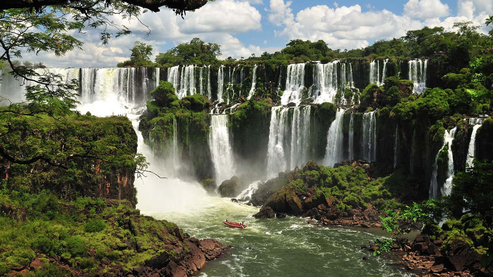

Biggest cities in Brazil
- São Paulo
- Rio de Jeneiro
- Brasília
- Salvador

The statue Christ the Redeemer is a very famous religious monument.

Chapada Diamantina is a Brazilian national park based around a plateau that contains many diamond deposits.

Iguazu Falls is the largest waterfall in the world, at a Brazilian national park!
Famous people from Brazil!
- Pelé - Possibly the most popular football player ever, Pelé was awarded the FIFA Player of the Century Award for the entire 20th century.
- Ronaldinho Gaúcho - One of the greatest football players of all time, Ronaldinho won two FIFA World Player of the Year awards.
- Gisele Bündchen - A Brazilian model, activist, and businesswoman. She was the highest paid model in the world for over a decade.